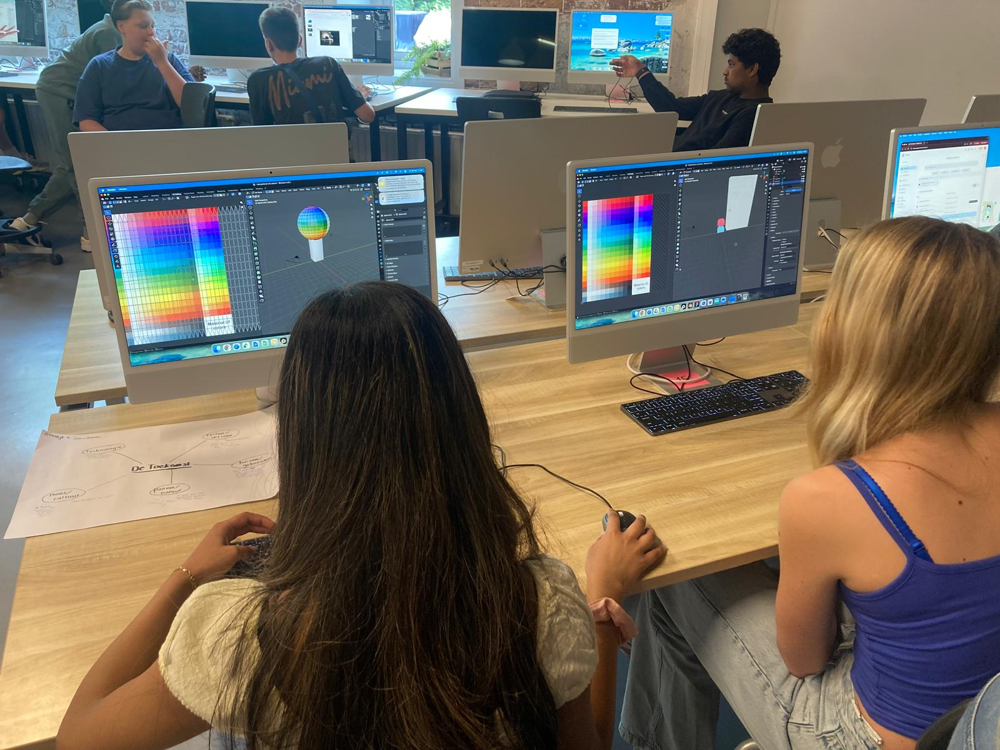
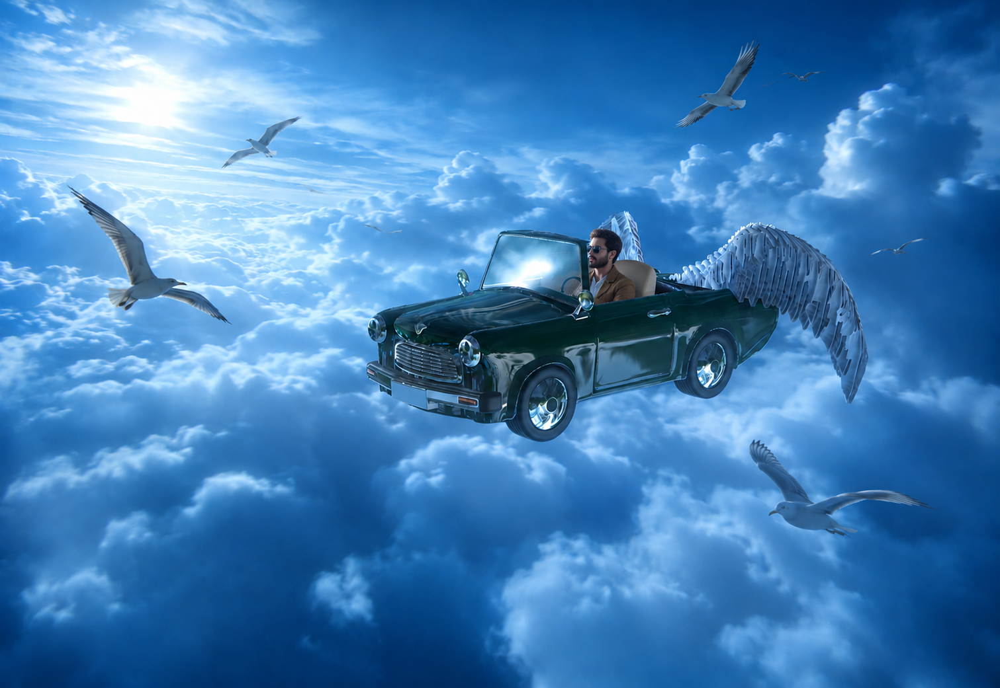
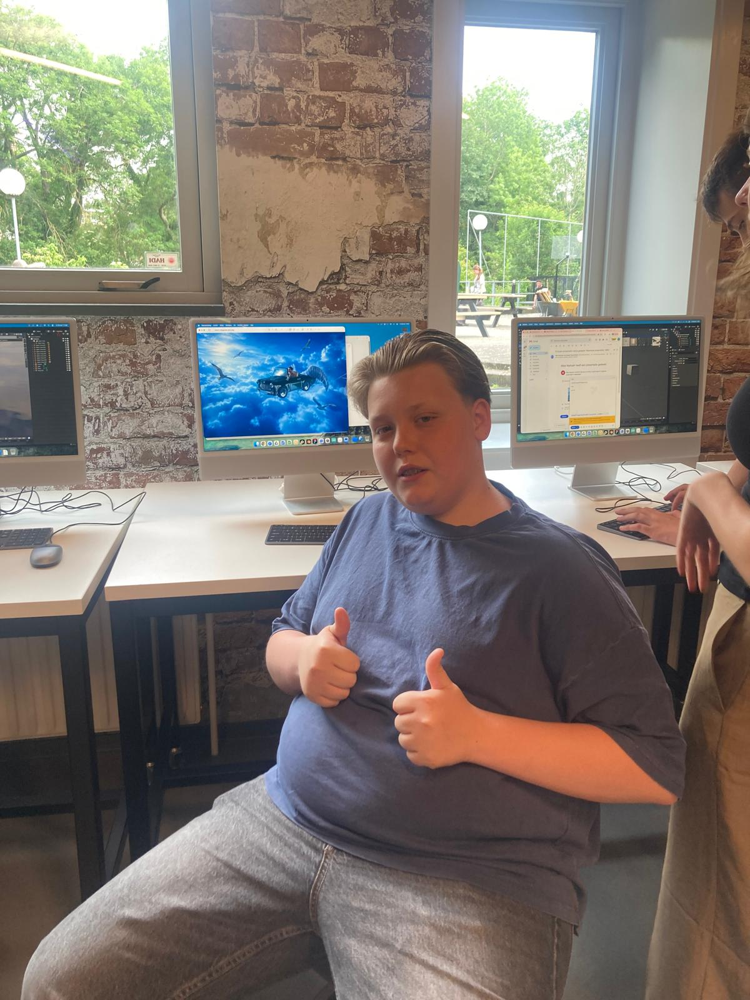
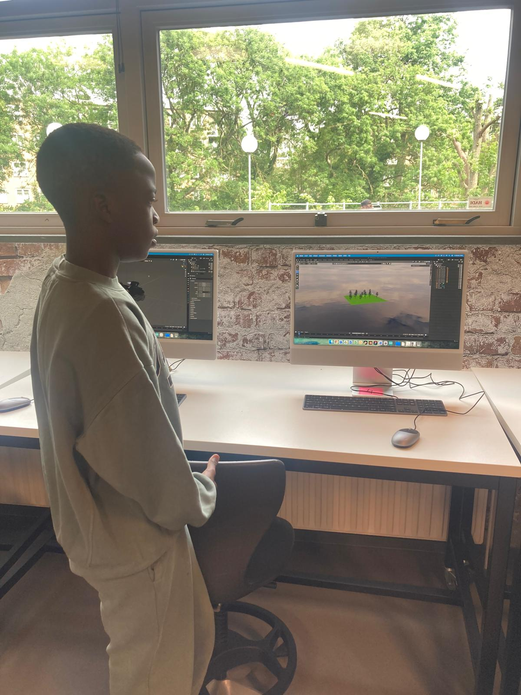
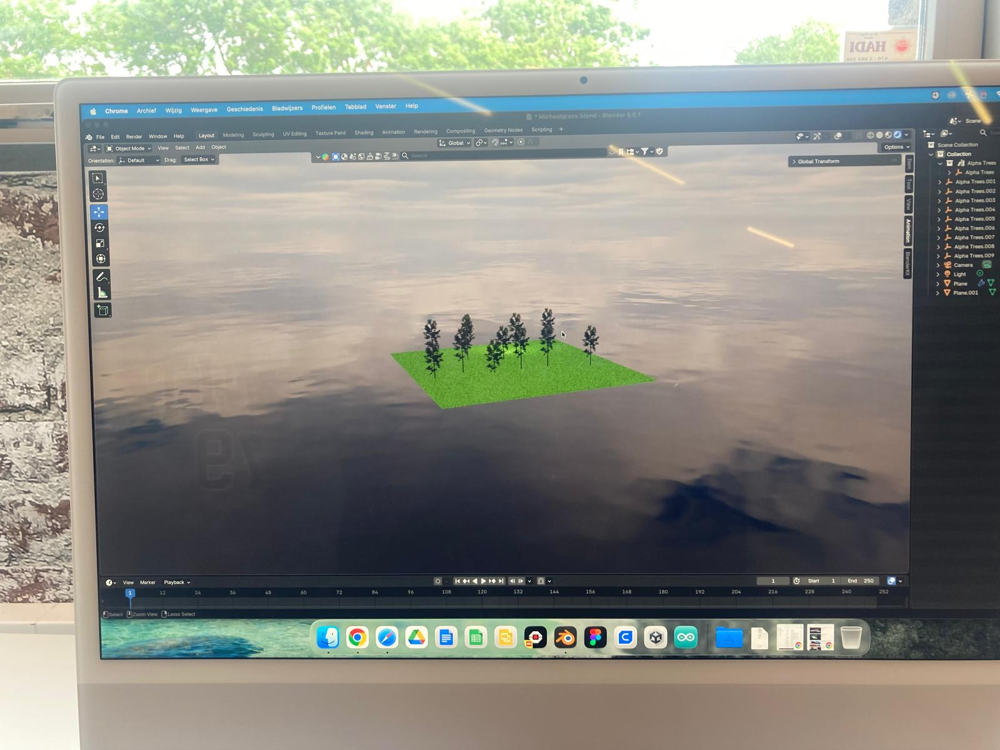

In de bovenstaande 3D-scene is te zien hoe verschillende toekomstscenario's samenkomen. Overkoepelend zag ik in hun werk een optimistisch toekomstbeeld waarin technologie niet tegenover de natuur staat, maar juist bijdraagt aan een schonere, groenere en meer samenwerkende wereld.
Het groepje dat deze scene heeft gemaakt vertelde dat zij een toekomst zagen waarin robots een ondersteunende rol zouden spelen, bijvoorbeeld bij het bouwen van gebouwen of het planten van bomen.
Ook kwamen duurzame vormen van transport terug in hun werk, zoals vliegende auto’s die werken op zonne-energie. Volgens hun concepten zou dit het mogelijk maken om sneller te reizen zonder het klimaat te belasten.
Dit groepje had een positieve kijk op de toekomst van de planeet en de natuur. Door een verbeterd klimaat zouden bomen weer volop kunnen groeien. Om de schone, nieuwe natuur vorm te geven vroeg een leerling hoe zij haar boom kon laten glinsteren. Dit heb ik vervolgens laten zien in Blender.
Deze toekomst is vormgegeven door: Daisy, Mila, Liselotte en Kiki

Vliegende auto's waren een populair toekomstbeeld onder de leerlingen. Zo ook bij Grant. Online vond hij een 3D-model van een auto en van vleugels. Deze heeft hij in Blender samengevoegd tot één geheel. Vervolgens heeft hij een screenshot gemaakt van zijn Blender scene en aan AI gevraagd er een coole achtergrond bij te maken.
Het was interessant om te zien dat sommige leerlingen tijdens hun creatieve proces gebruikmaakten van bestaande 3D-modellen en AI-tools. Dit maakte geen deel uit van de opdracht, maar ik heb ervoor gekozen om hun eigen werkwijze hierin te respecteren en te waarderen. Het liet zien hoe vaardig ze zich al bewegen in de online wereld en hoe ze deze tools op een intuïtieve manier inzetten als aanvulling op hun eigen ideeën, soms als een soort “finishing touch” in hun werk, zonder dat hier expliciet instructie voor was gegeven.
Deze toekomst is vormgegeven door: Grant


Ook Michael ziet de toekomst groen voor zich. Met zijn zelfstandige werkhouding en YouTube als leermeester had hij binnen een paar lessen een bebost eiland gemaakt, omringd door zee. Hij heeft vooral geëxperimenteerd met het bouwen en plaatsen van objecten en zo stap voor stap zijn scene opgebouwd. Het resultaat is een simpel maar duidelijk toekomstbeeld waarin natuur centraal staat.
Deze toekomst is vormgegeven door: Michael

